|
CGAL 4.13 - Scale-Space Surface Reconstruction
|
|
CGAL 4.13 - Scale-Space Surface Reconstruction
|
This CGAL package implements a surface reconstruction method which takes as input an unordered point set and computes a triangulated surface mesh interpolating the point set. We assume that the input points were sampled from the surface of an object. The method can also process point sets sampled from the interior of the object, although we cannot provide guarantees on the output. This method can handle a decent amount of noise and outliers. The point set may greatly undersample the object in occluded regions, although no surface will be reconstructed to fill these regions.
A triangulated surface mesh is generated by first computing the point set at a coarse scale, then constructing a mesh of the point set at this scale, and finally reverting the points of the mesh back to their original scale.
The problem of surface reconstruction from a point sample is ill-defined. Because the points only provide a sample of the surface, we cannot determine with exact certainty how the surface behaves between the points. We may get more information about the surface by sampling the surface further, but even then the problem remains on a smaller scale.
For real-world data sets we also have to contend with noise and outliers, small errors in the point location and points that do not sample the surface respectively. These are generally caused by faults in the measurement procedure. Unless we actually know the surface sampled, we cannot determine whether a distinctive point is an outlier, is caused by noise, or samples a small feature of the surface.
To overcome these obstacles, we model the point set at different scales using a scale-space [1]. For our purpose, a scale is an abstraction level of the point set. At a lower, finer scale the point set describes smaller features of the object. Conversely at a higher, coarser scale the point set only describes larger features. A scale-space describes the point set at a dynamic scale. It is a four-dimensional space with the scale as fourth dimension. Increasing the scale is similar to smoothing the underlying surface described by the point set. Figure 58.2 shows an example point set at different scales. The overall effect of modeling this scale-space, is that the surface reconstruction problem is more well-defined at higher scales.
Small changes in scale result in small changes in the points set that depends on the local shape. As the scale increases, the geometry approaches a number of points based on the connected components. Given a set of points at a fixed scale, the point set at a higher scale can be determined unambiguously, but this is not the case for the point set at a lower scale, as demonstrated by Figure 58.3
The scale-space surface reconstruction method works in two phases. Firstly, a scale-space is constructed from the point set and an intersection of this space at a higher scale \( s \) is computed. Then, a triangulated surface mesh of the point set at scale \( s \) is computed. Neighboring triangles in the mesh have consistent orientation, as expressed using the right-hand rule on the ordered vertices of the triangle.
Generally, a reconstruction interpolating the original point set is desired. This can be achieved by reverting the points of the mesh to their original scale, i.e. their original locations. Figure 58.4 shows example reconstructions from the point set at its original scale and at a higher scale with reverted mesh.
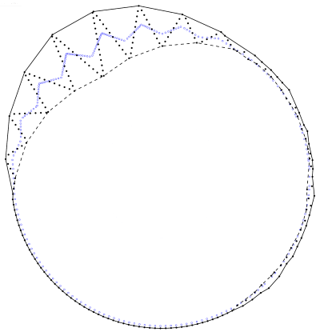
|
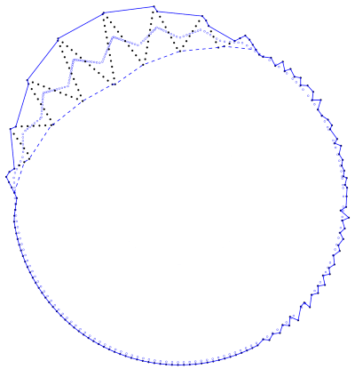
|
Both the smoothing operator and the mesh reconstruction assume that points near each other belong to the same part of the object. This is usually expressed in the notion of balls with a fixed size, the neighborhood radius. If such a ball contains multiple points, these points are near each other and will influence each other while increasing the scale. If such a ball is empty, it lies outside the object. Note that outside is based on regions empty of points, not on whether a volume is enclosed by the surface.
The neighborhood size can be estimated through statistical analysis. We use a kD-tree to estimate the mean distance to the n-th nearest neighbor and we use this distance as an approximator for the resolution.
The point set at the initial scale is equivalent to the input point set. In theory the scale can be varied continuously, but in practice the scale is increased in discrete iterations for efficiency reasons. The scale is increased one iteration by transforming each point using a smoothing operator. CGAL provides two smoothing operators for scale space reconstruction:
CGAL::Scale_space_reconstruction_3::Weighted_PCA_smoother (default) uses the density-weighted principal component analysis (PCA) of the local neighborhood. If the point set was sampled from a surface for which any unwanted deformation and sampling noise is smaller than the neighborhood size, the scale is coarse enough for mesh reconstruction after a few iterations of increasing the scale.CGAL::Scale_space_reconstruction_3::Jet_smoother uses the function CGAL::jet_smooth_point_set() that projects the point to a local smooth (jet) surface. This smoothing is less agressive and should be used if the point set is not very noisy and if a higher precision is sough.Users can define their own smoothing operators by following the concept CGAL::Scale_space_reconstruction_3::Smoother.
Meshing is achieved by interpolating the smoothed point cloud and propagating back the connectivity to the original point cloud. CGAL provides two meshing operators for scale space reconstruction:
CGAL::Scale_space_reconstruction_3::Alpha_shape_mesher (default) uses a filtered CGAL::Alpha_shape_3 algorithm to generate one or several "shells". This method is designed for closed shapes (without boundary). Point sets sampling an opened shape result in an overlapping surface. It requires a fixed neighborhood size parameter, related to the resolution of the data. This parameter indicates a region for which we can assume it contains at least one point if it is centered on the surface.CGAL::Scale_space_reconstruction_3::Advancing_front_mesher uses the algorithm CGAL::Advancing_front_surface_reconstruction to generate an oriented 2-manifold surface. This method handles shapes with boundaries and gives the user control over the largest facets used.The method provides access to intermediate results and users can adjust these to better suit their needs. The (intermediate) results are the estimate of the resolution, the scale, and the final collection of surface triangles.
Note that Jet_smoother and Advancing_front_mesher are methods that rely upon other CGAL packages and that do not correspond to the original scale space algorithm. They can be used as alternative operators for the cases of point clouds with low noise that sample surfaces with boundaries. For more information on their parameters and effect, please refer to their respective manual pages (Smoothing and Chapter_Advancing_Front_Surface_Reconstruction). The rest of this documentation focuses on the default behavior using Weighted_PCA_smoother and Alpha_shape_mesher.
The scale-space surface reconstruction method has two main global parameters: the radius of the neighborhood ball and the number iterations of increasing the scale. If no appropriate neighborhood radius is known, this can be estimated using another two parameters: the mean number of neighbors and the number of samples. We have empirically determined values for each of these parameters that work well on a broad spectrum of data sets. However, we advise to carefully fine-tune these parameters for each type of data set.
The scale-space reconstruction operates locally. Points within a local neighborhood influence each other when increasing the scale. Similarly, points near each other in space are more likely to be near each other on the reconstructed surface. Therefore, it is important to have a good indication of which points are near each other. This proximity is expressed in the neighborhood ball radius parameter.
The neighborhood ball radius is related to the point density and the object thickness. In the ideal case, the radius is chosen such that any ball \( B \) with this radius centered on any point of surface of the object will contain several points that should be connected by a local patch in the surface to reconstruct. At the same time, \( B \) should not contain any points that should not be part of this local patch, such as points on the other side of the object.
The neighborhood radius can be estimated automatically from the point set. In this case, the radius is estimated such that on average it contains a given number of points. The number of points should be chosen such that the conditions on the neighborhood radius described above are preserved. Generally, an average of 30 neighbors gives good results. This number may be increased if parts of the object have a very low point density, it may be decreased if thin features of the object should be reconstructed better.
The radius estimation is based on a number of sample points. This number of samples is related to how regularly the point set covers the object. A large sample size may be required if the object is covered very irregularly. However, a larger number of samples may require more computation time. We generally use 200 samples to estimate the neighborhood radius.
The scale-space method tries to make the surface reconstruction problem less ill-posed by increasing the scale to an appropriately coarse scale. At this coarse scale the point set samples a smoothed surface, which is easier to reconstruct. The number of scale increase iterations determines how much this surface is smoothed.
The number of iterations is related to the noise in the point set, the acuteness of surface features, and the thickness of the object. Point sets with a lot of noise and objects with sharp or small features will require more iterations. At the same time, processing too many iterations can degenerate a volume into a plane. These degeneracies may cause the reconstructed surface to connect points on opposite sides of the object. Generally, 4 iterations of increasing the scale are appropriate.
The surface mesh constructed at scale \( s \) is non-self-intersecting. The interiors of any two triangles cannot pairwise intersect in a line segment. However, the surface does not need to be 2-manifold. An edge may be incident to more than two triangles and triangles may overlap exactly if large regions on both sides of the triangle are empty of points. Note that we count overlapping triangles with opposite orientations as separate triangles. In many cases where the points sample the surface of an object, the computed surface will contain both an outward-facing and a similar inward-facing surface, with a thin volume between them.
The surface mesh will not have edges incident to only one triangle or holes, loops of such edges, and the triangles are all oriented away from the point set. If the point set has holes, it is likely that the surface mesh will contain overlapping triangles with opposite orientation touching this hole.
An additional treatment can be applied to force the output surface to be 2-manifold: small flat volumes are found before reconstructing and the surface is forced to only use one side of the volume while keeping consistency with the adjacent singular facets. Only one side of each singular facet is used. In addition, non-manifold edges and vertices are removed as a post-processing. The facets that have been discarded to make the surface 2-manifold are stored and accessible.
If the object is not densely sampled or has disconnected components, the reconstructed surface may have several disconnected components. The surface is either an unordered collection of triangles, or the same collection sorted per shell. A shell is a collection of connected triangles that are locally oriented towards the same side of the surface.
When reverted to the original scale, we cannot guarantee the surface is a valid embedding, because the triangles of this surface may pairwise intersect in their interior. It may also have boundary edges, although these will always be incident to two surface triangles oriented in opposite directions. However, when using appropriate parameter settings for the number of iterations and neighborhood size the surface will generally not self-intersect. The appropriate parameter settings depend on the geometry of the point set and generally need to be fine-tuned per data set, as described later.
The main classes Scale_space_surface_reconstruction_3, Weighted_PCA_smoother and Alpha_shape_mesher contain all the functionality to estimate the neighborhood size, compute the scale-space and increase the scale, and reconstruct the surface from the point set at the current scale.
The neighborhood size is estimated using Orthogonal_k_neighbor_search. The point set is generally stored in a Orthogonal_k_neighbor_search::Tree. When the neighborhood size is estimated, this tree is searched for nearest neighbors.
The scale-space is constructed at the original scale of the points. An iteration of increasing the scale is computed using a weighted PCA procedure. As described by Digne et al. [1], unlike similar methods this procedure does not lead to an undesirable clustering effect. By default the efficient Eigen library is used for this procedure if available. Otherwise, the internal fallback Diagonalize_traits is used. It is also possible to provide your own model for the DiagonalizeTraits concept. The weighted PCA procedure is performed locally per point, so it can be performed with parallel computing (linking with Intel TBB and passing the Parallel_tag to the reconstruction class is required).
The mesh reconstruction is performed by filtering a 3D alpha shape of the point set at a fixed scale. This filtering constructs a triangle for each regular facet; each singular facet results in two triangles facing opposite directions.
The resulting surface is stored as a collection of triples. Each triple contains three indices to the point set. The scale iterations do not change the order of the points. This means these indices can be applied on the point set at its original scale to get an interpolating surface, called reverting the scale of the surface. The indices may also be applied to the point set at the current scale to get a smoothed surface. This smoothed surface will generally have shrunk somewhat compared to the reverted surface.
To reduce memory requirements, the point set is not stored at its original scale. Instead, the stored point set at the current scale is a clone of the input. This means that the original input can be used to revert the surface.
There is a wide variety of possible point sets, whether synthetic or measured. The scale-space surface reconstruction method attempts to make the reconstruction problem less ill-posed. However, we cannot guarantee good results for arbitrary point set. Some point sets require careful parameter setting, while for others this method is ill-suited altogether. Here, we show different cases including the ideal sampling and different problem cases.
The scale-space surface reconstruction has lenient ideal conditions. The surface should be reasonably regularly sampled and it should not contain overly concave corners. These notions affect the neighborhood parameter in opposing ways: more regular sampling may admit a smaller neighborhood parameter, which will admit smaller concavities. The point set may contain noise that is significantly smaller than the neighborhood size. Even so, when using the method to construct a mesh interpolating the original point set, any noise will deform the mesh. Figure 58.5 shows a reconstruction under ideal conditions.
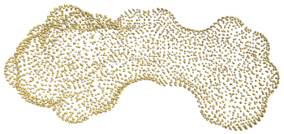
|
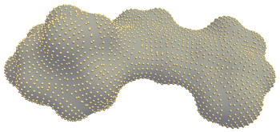
|
Surfaces with boundaries are handled naturally. However, it is important to note that in these cases, the surface does not explicitly identify the boundary and loops around it. In many cases, this will lead to boundary edges being shared by neighboring triangles of the surface that are identical except for their orientation. The boundaries may be made explicit by identifying orientation discrepancies between neighboring triangles, but this functionality is not provided by this package. Figure 58.6 shows a reconstructed surface with a boundary.
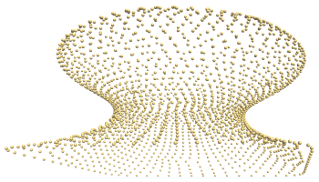
|
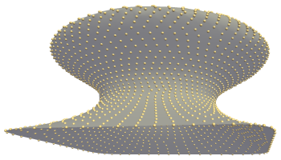
|
Note that the mesher Advancing_front_mesher is a good alternative for producing well oriented surfaces with boundaries.
As described above, ideally the point set regularly samples the surface. For example, for each point its six nearest points lie at roughly equal distance forming a rough hexagon around the point. This will generally not occur when working with realistic data. The scale-space method can reconstruct very unevenly sampled surfaces, as Figure 58.7 shows. However, as noted earlier the sampling regularity and allowed concavity form a trade-off. Figure 58.8 shows a case where we cannot simultaneously model the concave regions and sparse regions correctly.
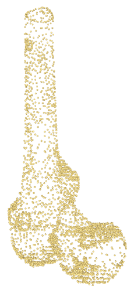
|
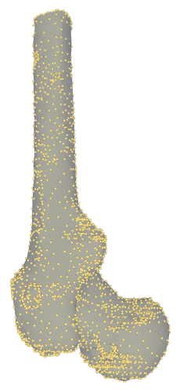
|
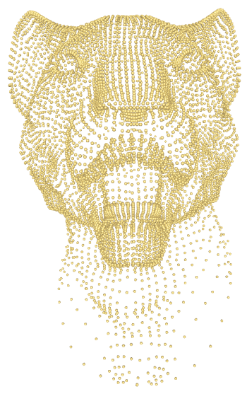
|
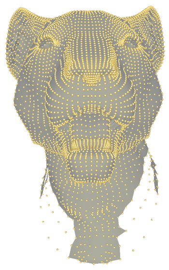
|
The scale-space surface reconstruction method was not designed to deal specifically with surfaces with sharp features. However, it reconstructs these features adequately when using appropriate parameter settings, as demonstrated in Figure 58.9. The main prerequisite for correctly reconstructing the sharp features is that they contain sufficient sample points on the features and the features are not too thin compared to the neighborhood parameter.
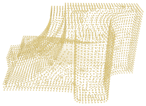
|
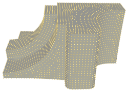
|
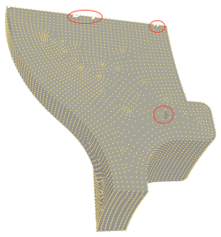
|
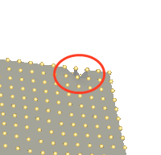
|
The scale-space surface reconstruction method does not take into account the topology of the surface. This means the reconstructed surface may have a different topology than the surface sampled to obtain the point set. Figure 58.10 shows an example point set that was sampled from a surface with the topology of a sphere; the reconstructed surface has the topology of a torus.
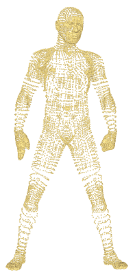
|
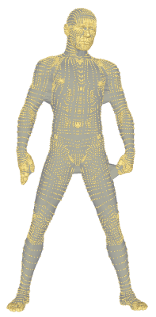
|
Many point sets contain point attributes such as normals or colors. Because the scale-space surface reconstruction constructs the connectivity between the original points, any point attributes that make sense for a surface can be propagated to the reconstruction. Figure 58.11 shows the surface reconstructed for a set of points with colors.
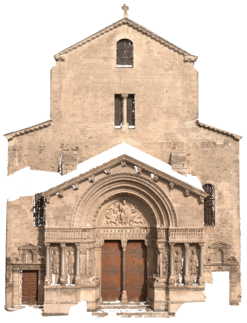
|
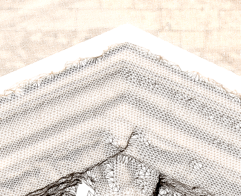
|
We have evaluated the scale-space surface reconstruction method on several data sets of various sizes. Figure 58.13 shows the parameter settings used when processing the scale-space reconstruction method.
| Data set | Neighbors | Samples | Iterations |
|---|---|---|---|
| Mushroom (s) | 10 | 200 | 2 |
| Elephant (s) | 15 | 200 | 1 |
| Knot 1 (s) | 8 | 100 | 8 |
| Retinal (s) | 30 | 200 | 4 |
| Femur | 25 | 300 | 6 |
| Kitten (s) | 10 | 100 | 4 |
| Knot 2 (s) | 8 | 300 | 8 |
| Bull (s) | 100 | 600 | 1 |
| Fandisk (s) | 6 | 300 | 8 |
| Lion-head (s) | 12 | 400 | 1 |
| Turbine (s) | 60 | 400 | 1 |
| Graill 1 | 10 | 200 | 4 |
| Graill 11 | 10 | 200 | 4 |
| Man (s) | 100 | 600 | 1 |
| Face | 10 | 200 | 4 |
| Carc 20 LR | 10 | 200 | 4 |
| Carc 21 LR | 10 | 200 | 4 |
| Bowl 1 | 10 | 200 | 4 |
| Bowl 5 | 10 | 200 | 4 |
| Fount 1 | 10 | 200 | 4 |
| Fount 11 | 10 | 200 | 4 |
| Trophime | 10 | 200 | 4 |
| Carc 20 | 10 | 200 | 4 |
| Carc 21 | 10 | 200 | 4 |
Figure 58.13 shows the number of triangles of the surfaces constructed and the running time for doing so. Half of the data sets are synthetic, the others are constructed by image-based dense reconstruction. The data sets are ordered by size, the synthetic sets mainly making up the smaller ones.
The times were measured on a 64-bit Windows 7 system with 8 2.5GHz Intel processors and 16GB RAM. The scale-space constructions employ parallel computing using Intel TBB. The smaller data sets use roughly 0.1GB of memory, but the largest data sets have a peak usage of 10.5GB during the meshing step. For this benchmark we used the Exact_predicates_inexact_constructions_kernel kernel, FS enabled, and Sh disabled.
| Data set | Number of points | Surface triangles | Neighborhood (ms) | Scale-space (ms) | Meshing (ms) | Total (ms) |
|---|---|---|---|---|---|---|
| Mushroom (s) | 2,337 | 7,966 | 7 | 64 | 88 | 159 |
| Elephant (s) | 2,775 | 6,746 | 4 | 33 | 91 | 128 |
| Knot 1 (s) | 3,200 | 12,800 | 7 | 148 | 134 | 289 |
| Retinal (s) | 3,643 | 14,154 | 8 | 224 | 122 | 354 |
| Femur | 3,897 | 12,612 | 6 | 592 | 120 | 718 |
| Kitten (s) | 5,210 | 20,428 | 7 | 198 | 172 | 377 |
| Knot 2 (s) | 5,760 | 22,904 | 5 | 278 | 206 | 489 |
| Bull (s) | 6,200 | 11,892 | 20 | 238 | 149 | 407 |
| Fandisk (s) | 6,475 | 25,282 | 5 | 330 | 212 | 547 |
| Lion-head (s) | 8,356 | 27,128 | 7 | 125 | 249 | 382 |
| Turbine (s) | 9,210 | 14,084 | 12 | 293 | 201 | 507 |
| Graill 1 | 12,681 | 45,326 | 14 | 1,166 | 381 | 1,561 |
| Graill 11 | 14,617 | 54,550 | 18 | 1,072 | 454 | 1,544 |
| Man (s) | 17,495 | 38,496 | 25 | 845 | 421 | 1,291 |
| Face | 296,275 | 906,648 | 128 | 17,983 | 7,843 | 25,957 |
| Carc 20 LR | 1,311,850 | 1,311,850 | 154 | 20,652 | 10,822 | 31,632 |
| Carc 21 LR | 1,443,510 | 1,443,510 | 157 | 19,778 | 12,290 | 32,228 |
| Bowl 1 | 2,741,328 | 2,841,328 | 351 | 34,688 | 22,559 | 57,608 |
| Bowl 5 | 3,682,188 | 3,682,188 | 471 | 50,762 | 29,899 | 81,144 |
| Fount 1 | 1,504,761 | 5,946,502 | 764 | 112,028 | 51,451 | 164,262 |
| Fount 11 | 2,589,083 | 10,203,108 | 1,350 | 216,623 | 85,231 | 303,248 |
| Trophime | 4,572,657 | 16,982,194 | 2,413 | 630,502 | 134,427 | 767,389 |
| Carc 20 | 5,370,681 | 21,190,868 | 2,531 | 304,015 | 179,223 | 485,813 |
| Carc 21 | 5,800,135 | 23,042,576 | 2,916 | 365,731 | 212,840 | 581,535 |
This first example shows how to read a point set from a file, reconstruct the surface, and for each shell of the reconstruction, access the triangle vertex indices.
File Scale_space_reconstruction_3/scale_space.cpp
The different phases of the reconstruction can also be performed individually. This may be helpful in cases where the correct parameter settings are not known in advance. In Figure 58.4, the right figure shows the surface after incrementing the scale. After examining the reconstructed surface, we may decide that performing more iterations may better model the top-left part.
The next example performs two reconstructions with different smoothing of the point set by further advancing the scale space. It illustrates how the code can be used in an interactive way.
File Scale_space_reconstruction_3/scale_space_incremental.cpp
This example shows how to force the output surface to be 2-manifold. In this case, some facets may be discarded in order to remove non-manifold simplices. They are stored in a garbage container in an unordered fashion. They are accessed by iterating on this container.
File Scale_space_reconstruction_3/scale_space_manifold.cpp
This last example shows how to use the alternative operators Jet_smoother and Advancing_front_mesher.
File Scale_space_reconstruction_3/scale_space_advancing_front.cpp
This method was developed by Julie Digne et al. in 2011 [1] and implemented by Thijs van Lankveld at Inria - Sophia Antipolis in 2014.
 1.8.13
1.8.13